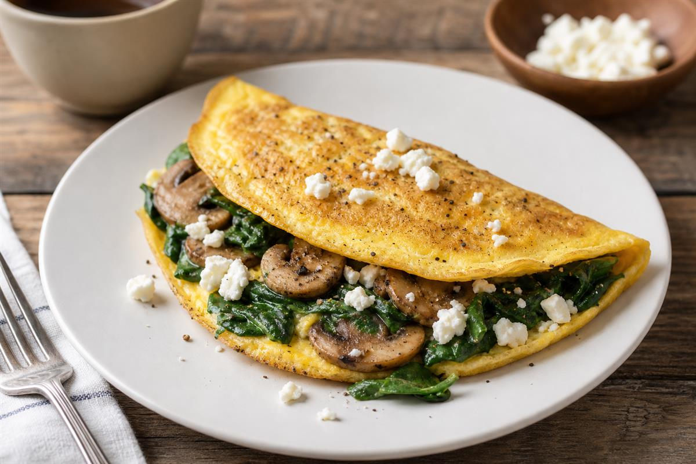

Mushroom & Spinach Omelette
Ingredients
- 3 eggs
- 60g mushrooms
- Handful spinach
- 30g feta
- Butter
Method
- Cook mushrooms in butter.
- Add spinach until wilted.
- Cook eggs separately.
- Add filling and feta.
- Fold and serve.
Huntress Notes
Gluten-free, onion-free. Great source of protein and flavour without onions.
Fox Notes
Add a photo of the finished dish and rate after testing. Suggested photo: bright natural lighting, rustic wooden table, forest-green accents.
